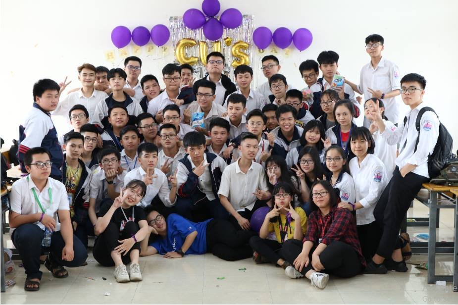
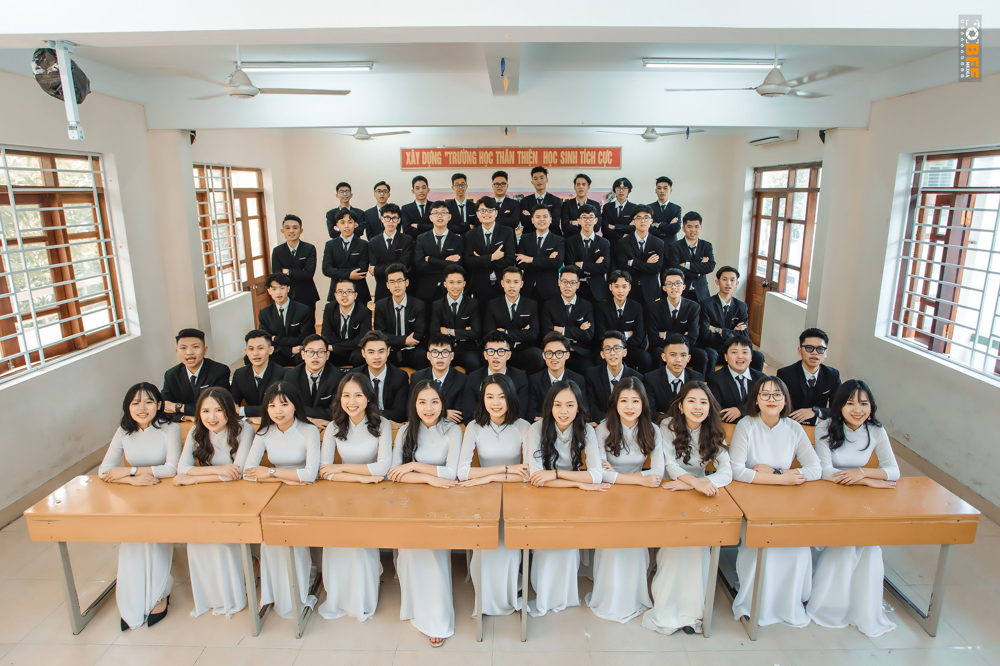
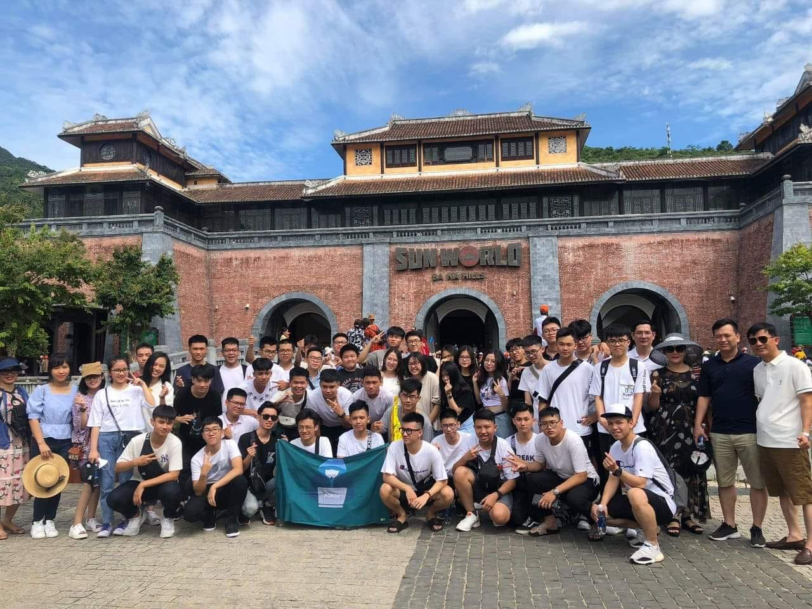

|
|
TRƯỜNG TRUNG HỌC PHỔ THÔNG CHUYÊN ĐẠI HỌC VINH |
||||
Trang chủ |
Cán bộ lớp |
Giới thiệu về lớp |
Ảnh lớp |
Video lớp |
|

|
Giới Thiệu Chung:
Trường Trung học phổ thông Chuyên Đại học Vinh, tiền thân là Khối Trung học Phổ Thông Chuyên Toán-Tin của trường Đại học Sư phạm Vinh, tên thường gọi: "chuyên bộ Vinh", là một trường chuyên công lập chịu sự quản lý trực tiếp của Bộ Giáo dục và Đào tạo tại Vinh, Việt Nam, trực thuộc Trường Đại học Vinh Địa Chỉ : 182 Lê Duẩn, Trường Thi, Thành phố Vinh, Nghệ An Thành Lập :1966 Giới Thiệu đôi lời về lớp A2K52 – Chuyên Tin khóa 2018-2021 : Thầy giáo chủ nhiệm: -Nguyễn Công Chuẩn(2018-2019) - Hồ Đức Hạnh(2019-2021) Lớp gồm 49 thành viên: 38 Bạn Nam và 11 Bạn Nữ chung sống và học tập ở A2K52 –THPT Chuyên Đại Học Vinh |
|  |
Lớp 11 lại là lúc chúng ta bồi đắp được thêm nhiều kỉ niệm nhất, vui có buồn có, cũng có nhiều lúc xảy ra xung đột ngoài ý muốn. Nhưng cũng từ đó mà ta học được cách tha thứ cho nhau, để ra hiểu thấu cho nhau, xây dựng được mối quan hệ tình thân tốt đẹp biết bao. |
 |
|
10 là khoảng lúc thời gian cho mọi người cùng gặp gỡ làm quen. Ban đầu còn nhiều bỡ ngỡ nhưng chúng ta đã cùng nhau trải qua nhiều kỉ niệm đẹp để hiểu thêm về nhau hơn. Đó cũng chính là nền tảng cho các mối tình thân ruột thịt của ngày hôm nay. |
 |
Lớp 12: Năm tháng qua đi, thấm thoát đã đến năm cuối, tưởng chừng ngày hôm qua chúng ta vừa mới gặp nhau vậy. Sau này mỗi người một phương trời, đi con đường khác nhau, xa rời mái trường, xa rời lớp học, và chẳng còn được học chung với nhau nữa nhưng thứ duy nhất ở lại lại chính là kỉ niệm. Ai cũng mong sớm được trở thành người lớn nhưng sự tưởng thành lại đánh đổi đi sự hồn nhiên vui tươi của tuổi học trò. Vậy nên ngay lúc này đây, các thahf viên trong lớp ai cũng trân quý hơn bao giờ hết giây phút được ở bên nhau. |